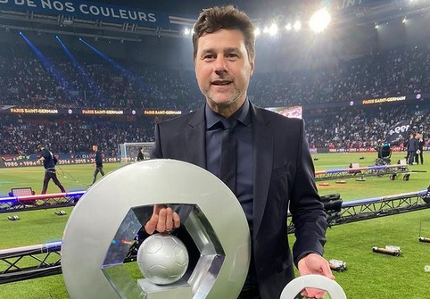

PARIS – Paris Saint-Germain (PSG) memecat Mauricio Pochettino dari jabatan pelatih. Juru taktik asal Argentina dan PSG sepakat untuk mengakhiri kerja sama per Selasa (5/7/2022).
“Paris Saint-Germain mengonfirmasi bahwa Mauricio Pochettino telah mengakhiri perannya di klub,” bunyi pernyataan resmi PSG, Selasa (5/7/2022).
Seperti diketahui, Mauricio Pochettino telah menjalani kariernya selama dua tahun di PSG. Pria berusia 50 tahun itu bergabung dengan Les Parisiens pada Januari 2021 lalu.Dalam perjalanan kariernya di PSG, mantan kapten Rouge & Bleus itu telah memimpin 84 pertandingan kompetitif. Perannya di klub raksasa asal Kota Paris itu cukup penting.
Sebab di bawah masa jabatannya, Pochettino mampu mengantarka Paris Saint-Germain memenangkan Trophée des Champions pada 2020 dan Coupe de France 2020-2021. Selain itu, juga gelar bersejarah ke-10 Liga Prancis 2021-2022 pada April lalu.